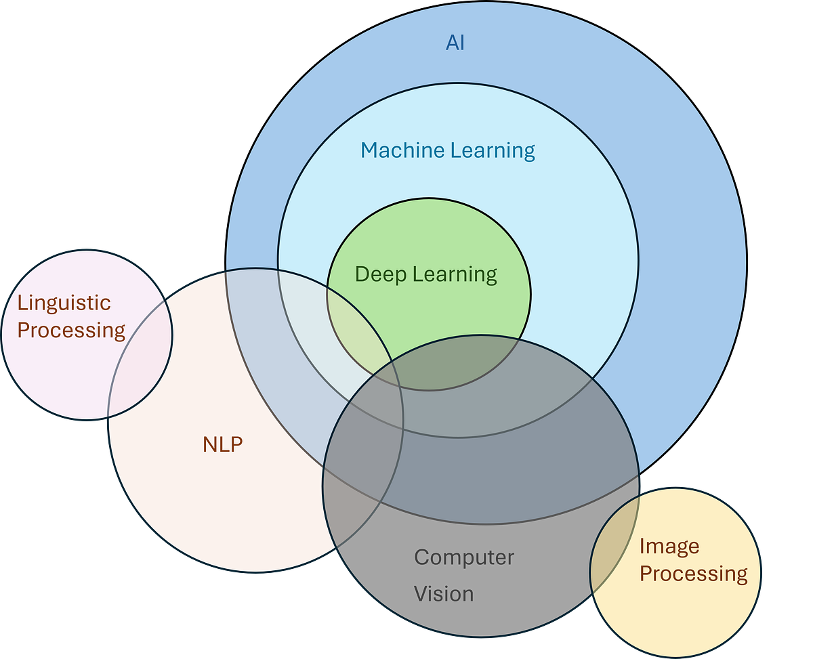
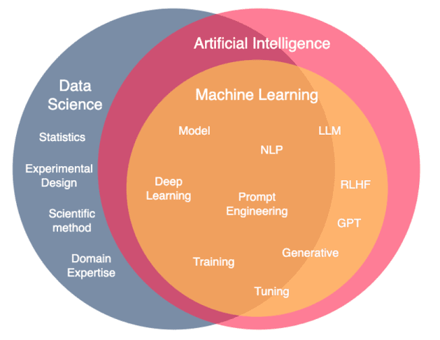
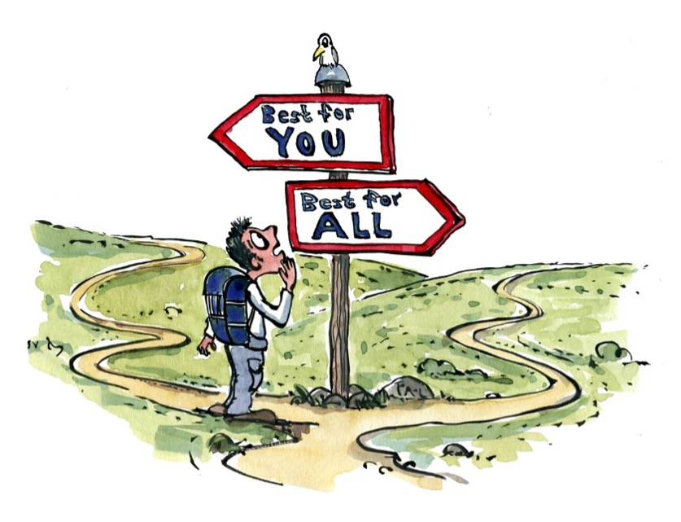

Research administration upholds contracts between sponsors and researchers.
Explicit
2 CFR 200 and agency T&Cs
IRB / IACUC / IBC approvals
Subrecipient agreements
F&A rate agreement
FCOI disclosures
Effort commitments
Data-sharing plans
Cost share
Implicit
Accuracy of what is submitted
Timeliness of reporting
Responsible stewardship of federal dollars
Scientific integrity
Transparency with reviewers
Helping PIs find and secure appropriate funding
Keeping researchers in compliance with sponsor and institutional rules
Sustained support for PIs through the proposal and award lifecycle
The institution’s public license
Why is literacy important for that mission?
"The ability to understand, evaluate, use and engage with written texts to participate in society, to achieve one's goals, and to develop one's knowledge and potential."
OECD PIAAC Literacy Framework.
Why is digital literacy important for that mission?
UNESCO defines digital literacy with seven verbs.
"The ability to access, manage, understand, integrate, communicate, evaluate and create information safely and appropriately … to build resilience in the face of disinformation."
EmpowermentSafety
UNESCO's definition of digital literacy applied to a new class of tool.
AI literacy is digital literacy.
"AI literacy equips learners to understand how AI systems work, critically evaluate their outputs, and use them ethically and creatively."
AI literacy without any hands-on practice becomes trivia, while practice without any literacy becomes dangerous. Real competence needs both trunks, growing at the same time.
This session builds the literacy. The practice is what you build afterward, on your own tools, in your own office.
The seven skills of AI literacy.
Understand. Build a working mental model of what AI is and how it produces its output.
Evaluate. Read AI output critically and validate its claims to catch confident-sounding errors before they propagate.
Manage. Know what kinds of data can go into which tools and what happens to your inputs after they leave your screen.
Access. Know which tool is appropriate for the task and have the credentials or approvals to use it.
Integrate. Fit an AI step into an existing workflow without breaking the parts that already work.
Communicate. Write prompts that specify what you want and explain AI use accurately to PIs, sponsors, and colleagues.
Create. Use AI to generate whatever output the task requires, then refine it from there.
The rest of this session walks through these, in roughly this order.
One more thing
Literacy is a spectrum.
You don't need to train a model, tune weights, or debug a transformer. That's someone else's job.
Learn what you need to use AI effectively and safely. Go deeper if you enjoy it, but you don’t have to!
Today is a preview of a five-module course for research administrators.
Each module builds a specific literacy skill you can bring back to your office.
1
Introduction to AI in Research Administration
Foundational concepts, terminology, and where AI fits in the work.
2
Ethical and Responsible AI Use
Vulnerability, harm, benefit, and reversibility as decision lenses.
3
Prompt Engineering for Research Administration
Writing prompts that specify what you actually need.
4
Compliance, Risk, and Institutional Governance
Right tool, right data, within institutional rules.
5
AI Use Cases
What this looks like in the day-to-day work.

Module 1 · Defining AI
Where do you draw the circle?
Deep learning is inside AI. Computer vision straddles the line. Linguistic processing sits partly outside. There is no clean boundary, and part of being AI-literate is knowing that the boundary is contested.
Draw a straight line through the data. Write the equation on a napkin.
What this means for RAs: interpretability and auditability go hand in hand.
Module 1 · Working definition
AI is any digital tool where we cannot say exactly how it arrived at the answer.
The output can be repeatable, but the reasoning behind it cannot be narrated.
Note: audits address how a process was done, not just what it produced. That is where AI’s inability to narrate its reasoning becomes a compliance concern for research administration.

Module 1 · How the fields relate
Data science, AI, and machine learning are not the same thing.
Machine learning is the engine that made modern AI possible. Data science is the discipline of drawing defensible conclusions from data. AI is the class of tools whose reasoning cannot be narrated.
Knowing which field a task belongs to is part of being AI-literate. Reach for data science when the answer must be reproducible; reach for AI when the input is unstructured.
Module 1 · How the machinery works
A typical AI pipeline in research administration.
Click a step to expand.
→→→→
Knowing each step is the literacy skill that lets you diagnose where a workflow fails and where to add validation.
Module 1 · How LLMs generate text
What “predict the next token” actually feels like.
Click or drag a word to complete the sentence, and watch how each pick narrows what comes next and how likely your finished sentence really was.
Fluent AI output is a chain of probabilistic picks, not a retrieved answer, so being AI-literate means treating every generated sentence as one branch among many the model could have taken.
Module 1 · Decomposing the work
Complex AI tasks are chains of simpler ones.
One “help me review this award notice” prompt gives you a mediocre result. Breaking it into stages lets you pick the right tool for each stage and validate as you go.
Task: Review a new award notice.
OCR
1
Pull text from the scanned PDF.
→
LLM · structured output
2
Extract dates, PI, budget, F&A into JSON.
→
Spreadsheet · rules
3
Compare budget against sponsor allowability caps.
→
LLM · plain-language
4
Draft a summary for the PI.
Breaking work into stages is the literacy skill. Each stage is easier to validate, each stage can use a different tool, and you can swap tools out as they improve without redesigning the whole workflow.
Module 1 · Ask for what you actually need
Structured output turns AI text into usable data.
You do not have to accept whatever prose the model gives you. You can ask it for a schema, and the output flows directly into your systems without a human retyping.
Freeform prose
The award is from NSF, awarded to Dr. Jane Smith for $500,000 over three years starting January 1, 2027, with an F&A rate of 54.5% on modified total direct costs.
Reach for it when the input is language, or the task is pattern recognition.
Module 1 · Choosing the right tools
The AI appropriateness continuum.
Process CriticalHuman-in-the-LoopOutput-Driven
HOW it was done matters mostWHAT was produced matters most
Limited AI involvement
Use auditable, reproducible tools: scripts, queries, spreadsheets with visible logic.
Financial audits
Effort certification & sign-off
Conflict-of-interest determinations
IRB/IACUC protocol reviews
Research misconduct investigations
AI can assist
AI does the prep. A qualified person reviews, validates, and signs off.
Pre-award budget review for allowability
Compliance checks against sponsor terms
Subaward risk assessments
Cost transfer justification review
Closeout checklist preparation
AI can lead
AI leads, but measure accuracy. Spot-check, track errors, add review back in if quality slips.
Drafting facilities/equipment descriptions
Formatting budgets to sponsor templates
Summarizing institutional policies
Generating biosketches from CVs
Routing form auto-population
Module 3 · A tool for the blank box
Promptulus scaffolds the seven components so you can focus on the inputs.
Rather than starting from a blank message box, Promptulus walks you through the pieces that make a prompt work: role, context, instruction, input data, output format, constraints, and examples. Fill the scaffold once, save it, and swap only the variable inputs for the next FOA, award, or closeout.
Evaluation has two dimensions: what you measure and how.
Choose the metrics that fit the output, then check both accuracy and repeatability. A model can be accurate but inconsistent, or repeatable but consistently wrong.
What you measure
Quantitative
Structured outputs with a known correct answer.
Accuracy, precision, recall, F1, exact match.
Qualitative
Unstructured or subjective outputs where human judgment is required.
Does this output match the desired or ground-truth result?
Repeatability
Does the model produce acceptable results consistently on the same or equivalent inputs?
Iterative refinement is measuring, adjusting the prompt or the tool, and measuring again. The literacy skill is knowing which metric to trust for the task in front of you.
Module 2 · A brief primer
Ethics is structured reasoning about what we should do.
Ethics in research administration is neither a rulebook that hands you the answer nor personal opinion dressed up in serious language. It is the practice of taking a claim about what we ought to do, testing it against comparable cases and against our other commitments, and revising when the tension is real.
Being AI-literate around ethics means recognizing when a decision is ethical rather than technical, and having language for talking about it in the office without either shrugging or performing certainty you do not have.
Module 2 · Four guiding questions
Start with what the situation puts at stake.
Who is made vulnerable?
Downstream: PIs, sponsors, subjects. Upstream: vendors, IT, whoever fed the training data.
How can potential harm be minimized?
Prioritize the well-being of those affected. Benefits to many do not automatically cancel harms to a few.
Who benefits, and how is it distributed?
Real benefits, honestly counted. Ask who is excluded from the benefit and whether that exclusion is systematic.
Can the adoption be reversed?
Under moral uncertainty, favor reversible choices. Optionality is part of the value.
Transparency and governance flow from these four questions: disclose AI use where the answers matter, document what you did so others can review it, and design workflows so a person can be held accountable.

Module 2 · Individual choice, collective outcome
The tragedy of the commons in a research office.
Each of us reaching for AI in the way that fits our own workload can, in aggregate, erode the resource that makes the office valuable in the first place: the trust that sponsors and PIs place in what we put our name on. When each of us quietly skips a disclosure or accepts a lightly checked output because everyone else is doing it, the shared resource drifts down together.
The literacy skill is asking not only whether AI helps you personally, but whether the aggregate pattern of your whole office reaching for it the same way still leaves professional trust intact.
Session outcomes
Learning objectives.
Explain foundational AI concepts and terminology relevant to research administration.
Identify tasks and workflows in research administration where AI and automation can add value.
Select appropriate AI models and break complex tasks into manageable components across different AI tools and platforms.
Design effective and accurate AI prompts for specific administrative tasks.
Evaluate AI outputs for accuracy, reliability, and appropriateness, and apply iterative refinement strategies broadly across AI systems.
Be prepared to discuss and address ethical, transparency, and governance considerations in AI-assisted workflows.